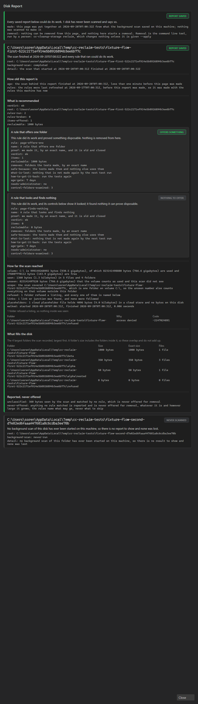
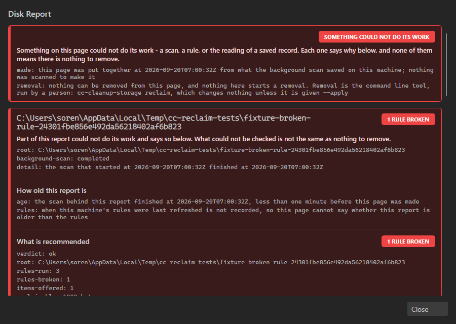
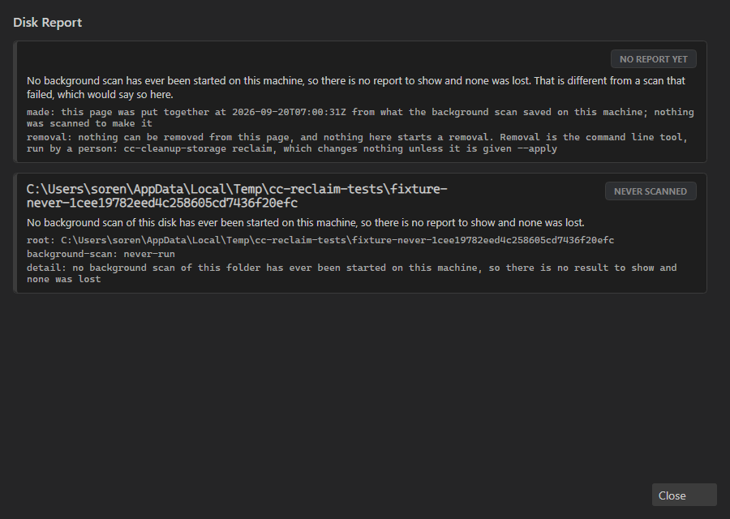
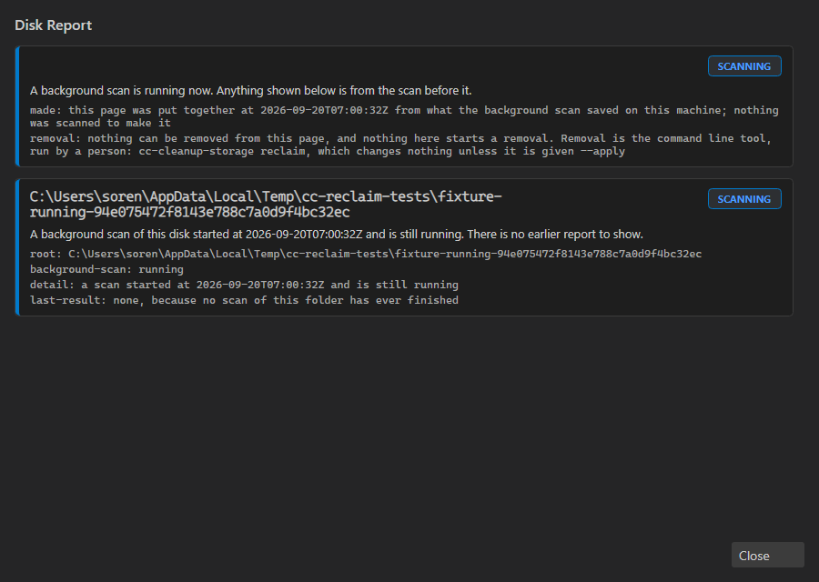
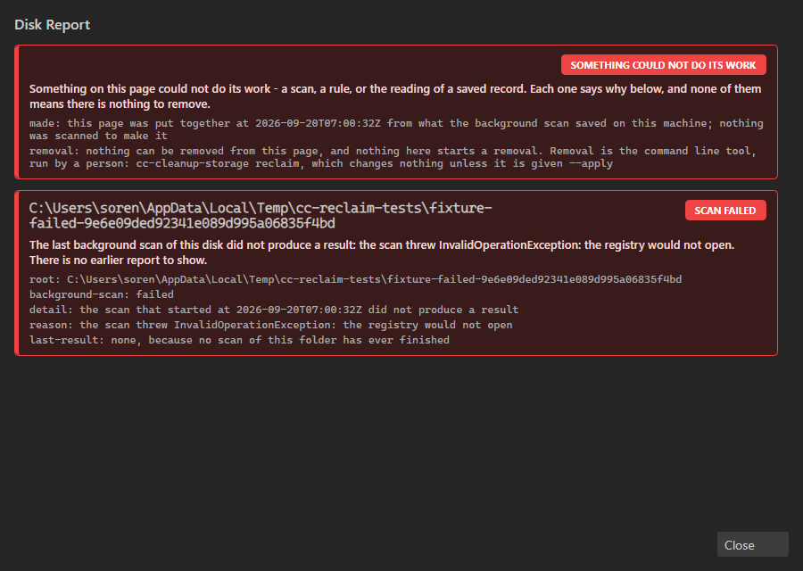
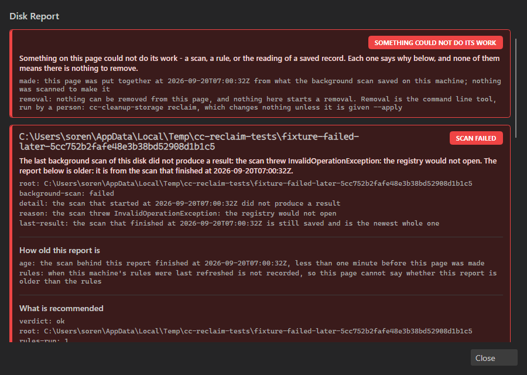
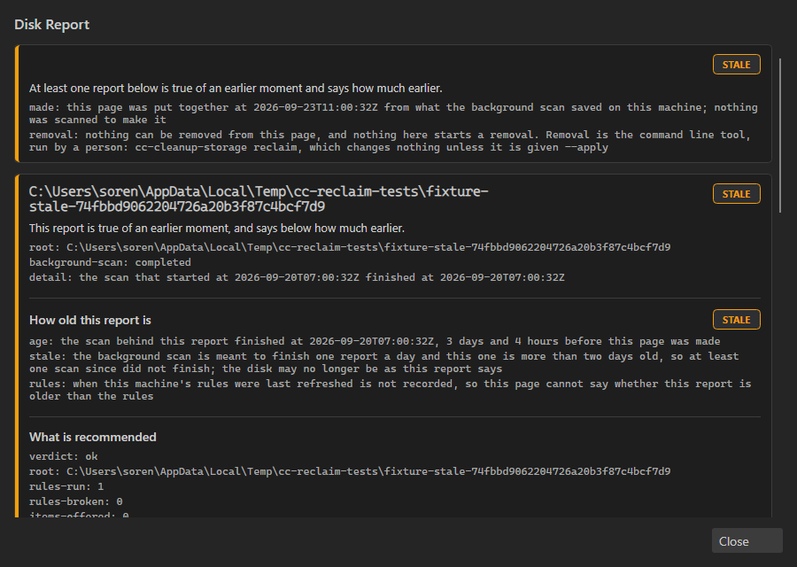
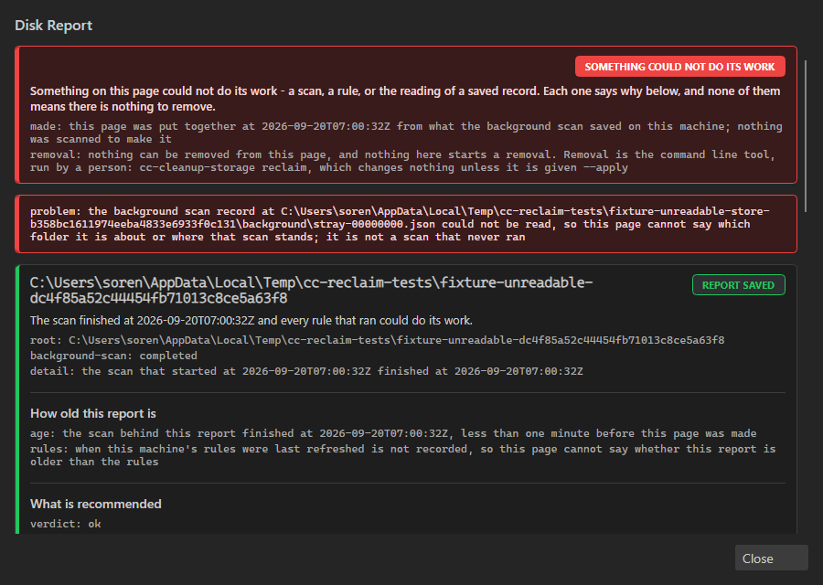
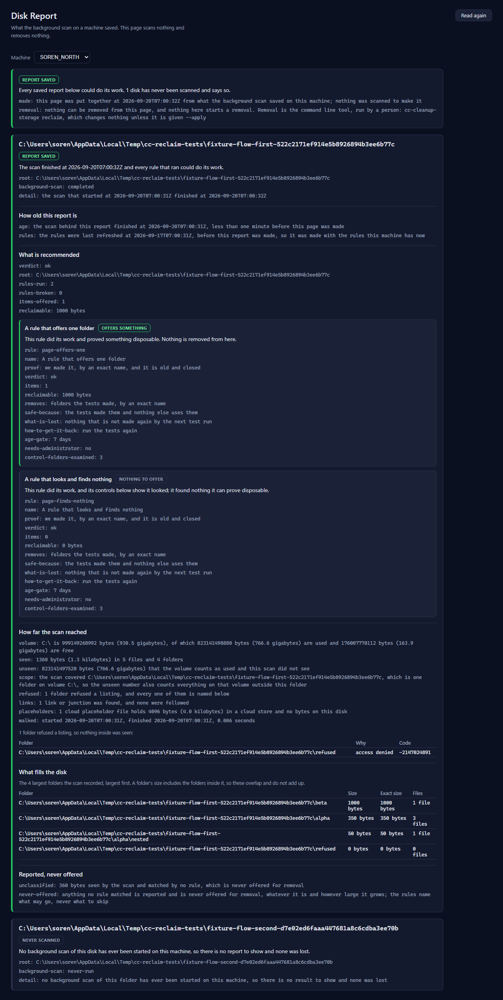

Reclaim the Disk, issue 3120 · 20 September 2026 · nothing here is a proposal, it is all built
These are not mockups. Every picture below is a real screen, rendered by the code that is built and pushed, from reports the engine actually wrote. They came out of the phase 6 build, not out of a drawing tool.
Nothing on any of these screens can delete anything. There is no remove button on either
surface. Removal is still a command you type, and it still does nothing without --apply.
| Thing | Where it lives | Did you ask for it | Works without a deploy |
|---|---|---|---|
| The Disk Report window in the Director, on your machine |
Beside Repositories in the Director you already run | Yes "We can build it into the director" |
Yes, after a Launcher release |
| The Disk Report page in the web Cockpit |
A page at /disk-report in the Cockpit |
No the Architect added it; nobody checked with you |
No — dead until you authorise a Gateway deploy |
| The rules the knowledge of what is junk |
A file inside the product; the Gateway can hand out newer ones | Yes "There has to be an online component" |
Yes — the shipped file works offline |
This opens from the Director on your own machine. No web, no Gateway, no account. It reads the report the background scan already saved to disk and prints it.

Each rule gets its own card, and the card carries the rule's whole argument: what it removes, why it is safe, what is lost, how to get it back, how old something must be before it qualifies, and whether it needs administrator rights.
A rule that looked and found nothing still gets a card, marked NOTHING TO OFFER, showing how many places it examined. That is deliberate: a rule that found nothing and a rule that could not look must never read the same.
This is the part that stops the report from overclaiming. It says how big the volume is, how much the scan actually saw, and how much it did not see. It names every folder that refused to be listed, counts links it did not follow, and counts cloud placeholder files that take no real space.
In the picture above the scan saw 1.3 kilobytes of a 930 gigabyte volume, and it says so in those words rather than implying the drive is nearly empty.
Everything the scan saw that no rule matched. It is shown to you and is never offered for removal, however large it grows. The rules name what may go, never what to skip.
This is the whole reason the mission exists. A rule that could not do its job must never look like a clean disk. So the broken state is loud, red, and first.







Six different ways of having no good answer, and six different things said to you. Not one of them renders as "nothing to remove".
This is the part you queried, and you were right to. It is the same report, rendered in the web Cockpit instead of the Director, with a machine picker at the top so you could read one machine's report from somewhere else.

About a fifth of phase 6: a read-only Gateway route of roughly fifty lines, a shared view component, and the tests over both. The other four fifths — the engine fold that writes the sentences, and the Director window — is work you did ask for and would exist anyway.
It does nothing until you deploy the Gateway. I have not asked for that deploy and will not. Left alone, this page is dormant code.
The second thing you asked about. A rule is one piece of knowledge about one kind of junk. Here is a real one, copied out of the shipped file:
{
"id": "npm-cache",
"name": "The npm package cache",
"proof": "owners-own-command",
"cacheFolder": { "base": "local-application-data", "segments": ["npm-cache"] },
"ownerCommand": "npm-cache-clean",
"whatIsLost": "nothing but the time to fetch a package again the next time a
build asks for one; how long that takes depends on the size of
the package and the connection, and is not known here"
}
Ten of these exist now: the npm, pip, uv and NuGet caches, DevThrottle's own test scratch folders, the Windows component store, Disk Cleanup's own categories, crash dumps, the recycle bin, and the orphaned Windows installer packages — the last being the 27.9 gigabytes measured on your machine during the design.
What changed is only where they live. They used to be compiled into the program, so a new rule meant shipping a whole new version of DevThrottle. Now they are a file with a version number, and the Gateway can hand out a newer one. The rules themselves behave exactly as before, and a rule arriving from the Gateway is put through the same checks as a built-in one — it cannot invent a new way to delete, and it cannot switch off any of the ten refusals.
The shipped file works with no network at all. The Gateway is only how a newer file would reach you without a release.
Say so and it comes out in one change: the Gateway route, the Cockpit page, and their tests. The engine fold and the Director window stay exactly as they are, because they do not depend on it.
My recommendation is to leave it. It is built, it is tested, it is dormant without a deploy, and taking it out now costs more time than leaving it in.